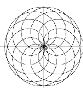

1.16 Graphics¶
FriCAS has a two- and three-dimensional drawing and rendering graphics package that allows you to draw, shade, color, rotate, translate, map, clip, scale and combine graphic output of FriCAS computations. The graphics interface is capable of plotting functions of one or more variables and plotting parametric surfaces. Once the graphics figure appears in a window, move your mouse to the window and click. A control panel appears immediately and allows you to interactively transform the object.
This is an example of FriCAS’s two-dimensional plotting. From the 2D Control Panel you can rescale the plot, turn axes and units on and off and save the image, among other things. This PostScript image was produced by clicking on the PS 2D Control Panel button.
draw(cos(5*t/8), t=0..16*%pi, coordinates==polar)

This is an example of FriCAS’s three-dimensional plotting. It is a monochrome graph of the complex arctangent function. The image displayed was rotated and had the shade and outline display options set from the 3D Control Panel. The PostScript output was produced by clicking on the save 3D Control Panel button and then clicking on the PS button. See Section ugProblemNumeric for more details and examples of FriCAS’s numeric and graphics capabilities.
draw((x,y) +-> real atan complex(x,y), -%pi..%pi, -%pi..%pi, _
colorFunction == (x,y) +-> argument atan complex(x,y))

An exhibit of FriCAS images is given later. For a description of the commands and programs that produced these figures, see ugAppGraphics . PostScript PostScript output is available so that FriCAS images can be printed.PostScript is a trademark of Adobe Systems Incorporated, registered in the United States. See ugGraph for more examples and details about using FriCAS’s graphics facilities.
This concludes your tour of FriCAS. To disembark, issue the system command )quit to leave FriCAS and return to the operating system.